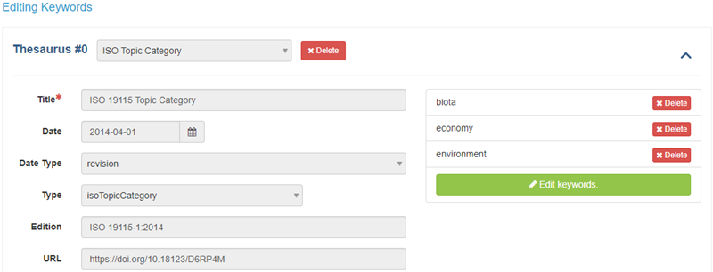

Keywords Tab
Product Records
Adding keywords to your metadata record allows for the record to be found later through a search engine, keywords are the way to tag your projects or products. The mdEditor is designed using thesauruses that contain pre-determined keywords. These thesauruses create a ‘controlled vocabulary’ so that all SA staff adding metadata can adhere to the same standards, and future search results can return clear results of projects and products.
Keywords Tab
| Metadata Field | Product Records |
|---|---|
| ISO Topic Category | Required |
| SA Priority Area | Required |
| SA Science Topic | Required |
| Conservation Action Open Standard | If Applicable |
| Global Change Master Directory (GCMD) | Best Practice |
To add Keywords to your Product Record
- Click “+ Add Thesaurus” on the right to add the different thesauruses.
- Add keywords from the following pre-populated thesauruses.
- If none of the keywords in the following categories are sufficient for tagging your record, you can create a custom thesaurus (see below for more information).
ISO Topic Category (Required)
Because mdJSON metadata is based on the ISO (International Organization for Standardization) metadata standard, all SA projects should select at least one ISO Topic Category. ISO topics were generally meant for spatial data so they might be a bit of a stretch, bu do your best to find the best fit. mdEditor provides definitions of each ISO topic category if you hover over the ? icon.
Choose all that apply. The ISO Topic list is as follows:
| biota |
| boundaries |
| climatologyMeteorologyAtmosphere |
| disaster |
| economy |
| elevation |
| environment |
| extraTerrestrial |
| farming |
| geoscientificInformation |
| health |
| imageryBaseMapsEarthCover |
| inlandWaters |
| intelligenceMilitary |
| location |
| oceans |
| planningCadastre |
| society |
| structure |
| transportation |
| utilitiesCommunication |
SA Priority Area (Required)
Choose all that apply. The list of options includes the following:
| Collaborative Partnerships |
| Landscape Conservation |
| At-risk Species |
| Data Management |
| Conservation Science Support |
| Climate Change |
| Social Science |
| Workforce Culture |
| Organization Operations and Standards |
| Communications |
SA Science Topic (Required)
Choose all that apply. The list of options includes the following:
| Biotechnology |
| Carbon Sequestration |
| Climate Adaptation |
| Climate Mitigation |
| Climate Resiliency |
| Decision Support |
| Diversity and Inclusion |
| Economics |
| Ecosystem Services |
| Environmental Justice |
| Human Dimensions |
| Genetics and eDNA |
| Habitat Connectivity |
| Indigenous Knowledge |
| Landscape Conservation Design |
| Policy |
| Pollinators |
| Species Status Assessment Support |
| Stakeholder Engagement |
| Strategic Habitat Conservation |
| Vulnerability Assessment |
| Wildlife Corridors |
| Wildlife Health and Disease |
| Working Lands |
Conservation Action Open Standard (If applicable)
The Open Standards for the Practice of Conservation is a globally utilized nomenclature for conservation. Including these keywords helps to align the work of USFWS Science Applications with global conservation efforts and to utilize the shared resources of the Conservation Standards Network. The open standards keywords for conservation actions are as listed:
| Land / Water Management (1.0) |
| Site/Area Stewardship (1.1) |
| Ecosystem & natural process (re)creation (1.2) |
| Species Management (2.0) |
| Species stewardship (2.1) |
| Species re-introduction & translocation (2.2) |
| Ex-situ conservation (2.3) |
| Awareness Raising (3) |
| Outreach & communications (3.1) |
| Protests & Civil Disobedience (3.2) |
| Law Enforcement and Protection (4.0) |
| Detection & Arrest (4.1) |
| Criminal Prosecution & Conviction (4.2) |
| Non-Criminal Legal Action (4.3) |
| Livelihood, Economic, and Moral Incentives (5) |
| Linked enterprises & alternative livelihoods (5.1) |
| Better products & management practices (5.2) |
| Market-base incentives (5.3) |
| Direct economic incentives (5.4) |
| Non-monetary values (5.5) |
| Conservation Designation and Planning (6) |
| Protected area designation or acquisition (6.1) |
| Easements & Resource rights (6.2) |
| Land/Water use zoning & designation (6.3) |
| Conservation planning (6.4) |
| Site Infrastructure (6.5) |
| Legal & Policy Frameworks (7) |
| Laws, regulations, & codes (7.1) |
| Policies & guidelines (7.2) |
| Research and Monitoring (8) |
| Basic research & Status monitoring (8.1) |
| Evaluation, effectiveness measures & learning (8.2) |
| Education and Training (9) |
| Formal education (9.1) |
| Training & individual capacity development (9.2) |
| Institutional Development (10) |
| Internal organizational management & administration (10.1) |
| External organizational development & support (10.2) |
| Alliance & partnership development (10.3) |
| Financing conservation (10.4) |
Global Change Master Directory (GCMD) ([Best Practice])
GCMD stands for Global Change Master Directory and these keywords are maintained by NASA. Look for useful keywords in the GCMD Science Keywords. There are GCMD Platforms and Instruments Keywords but they are unlikely to apply to SA projects.
Custom Thesaurus
If any of your desired keywords do not appear in the existing thesauruses, you can add them via the custom thesaurus. Use a custom thesaurus only for keywords that are not available in an existing thesaurus.
You cannot add keywords to an existing thesaurus; you can only add keywords in a custom thesaurus. If a region or program finds the need for the additional of keywords to an existing thesaurus or the need for another thesaurus, please contact the FWS SA National Data Steward.
Keywords and ScienceBase
Imported Keywords
If you imported your product metadata from ScienceBase, then the ScienceBase tags are each created as a keyword in a custom thesaurus.
Controlled vocab list in ScienceBase cannot connect to mdEditor. The selected keywords for any specific record will import into mdEditor, but the saved list will not be.
